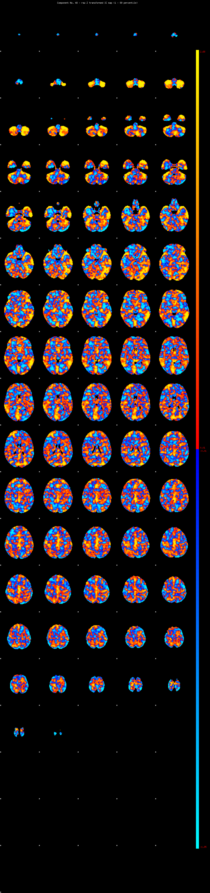
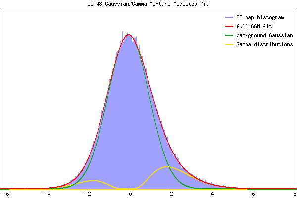

IC_48 Mixture Model fit
Means : 0.000000 2.764269 -2.252880
Vars : 1.000000 1.695636 0.466113
Prop. : 0.933284 0.053296 0.013421
This page produced automatically by MELODIC Version 3.15 - a part of FSL - FMRIB Software Library.